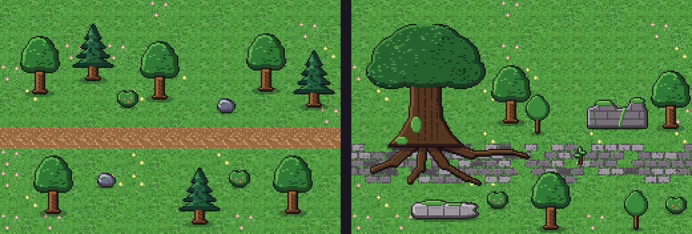
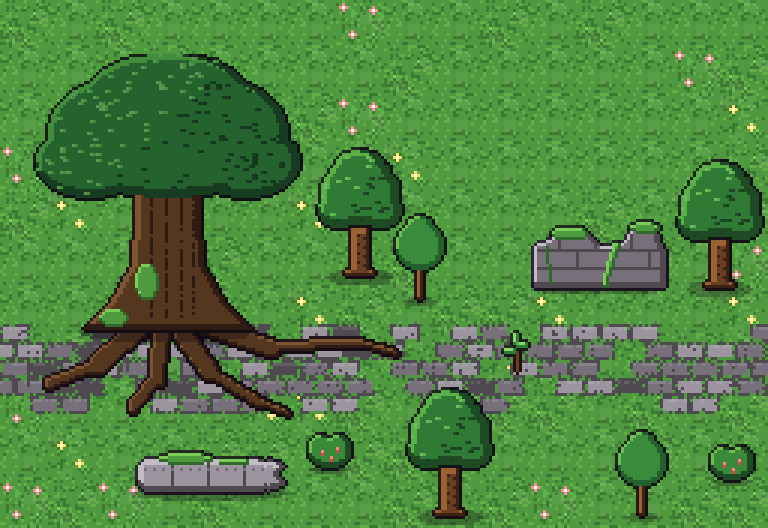
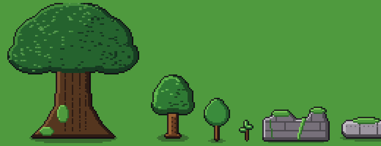

O Ermo no Bosque do Riacho
Imagens geradas pelo próprio pipeline de arte do jogo, na escala real dos tiles, ampliadas 3 vezes. Os personagens não mudam.
Hoje e proposto

Esquerda: o bosque de hoje. Direita: a proposta.
Proposto, maior

Peças novas

| Árvore ancestral | Três vezes a árvore de hoje, tronco com sapopemas e musgo, raízes sobre a estrada. Livro II: "uma floresta conserva por algum tempo árvores ancestrais, mas as novas não ocupam o mesmo teto". |
| Árvores jovens | A árvore de hoje e uma menor: a geração que cresceu depois. |
| Estrada antiga | Calçamento de pedra gasta, com blocos faltando e capim nas juntas. Livro I: "florestas cresceram sobre estradas, fortalezas, cidades". |
| Muda na rachadura | A semente na fenda da estrada, do epílogo do Livro II. |
| Base de muralha e coluna caída | Ruínas com musgo. Compêndio, Clareira da Encruzilhada: a ruína próxima pode ser "entrada lateral de complexos antigos". |